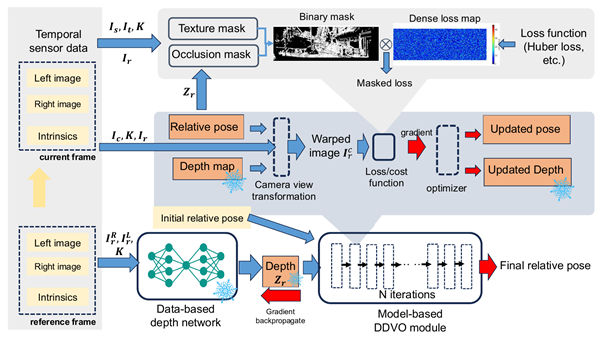

HDVO: Hybrid Dense Direct Visual Odometry
IEEE Transactions on Intelligent Vehicles · 2026
Journal extension of the IROS 2022 and ITSC 2023 papers: stereo depth for metric scale, a robust Huber loss, and STC/LAM binary masks; real-time on Jetson Orin and Thor.
BibTeX
@article{HDVO-TIV-2026,
title = {HDVO: Hybrid Dense Direct Visual Odometry},
author = {Liu, Ziming and Malis, Ezio and Martinet, Philippe},
journal = {IEEE Transactions on Intelligent Vehicles},
volume = {11},
pages = {930--945},
year = {2026},
publisher = {IEEE},
doi = {10.1109/TIV.2026.3708447}
}